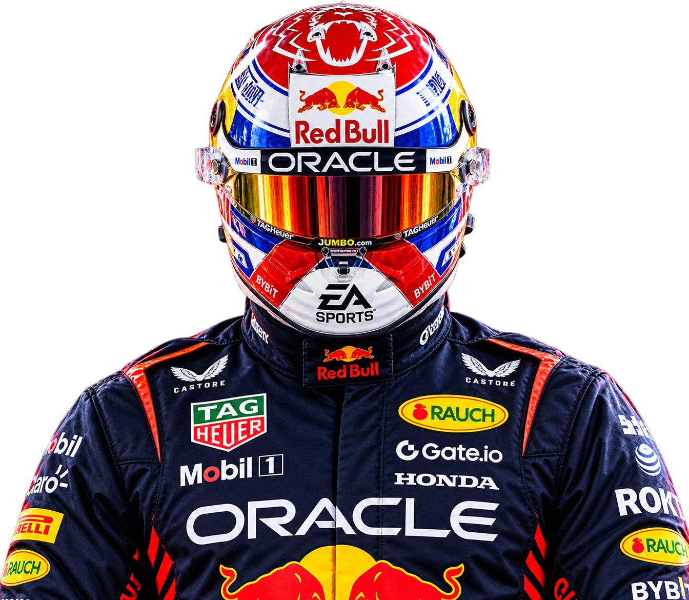
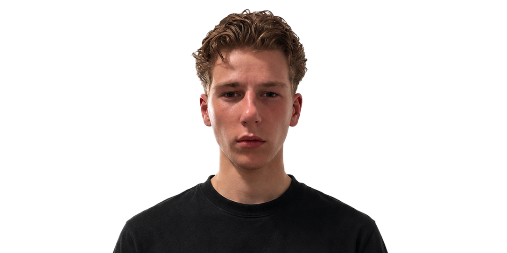
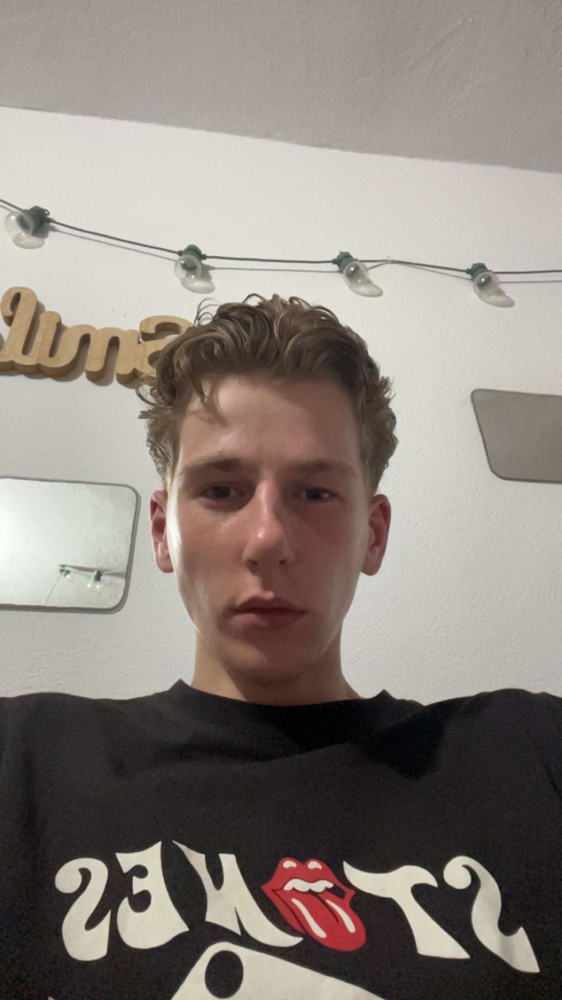
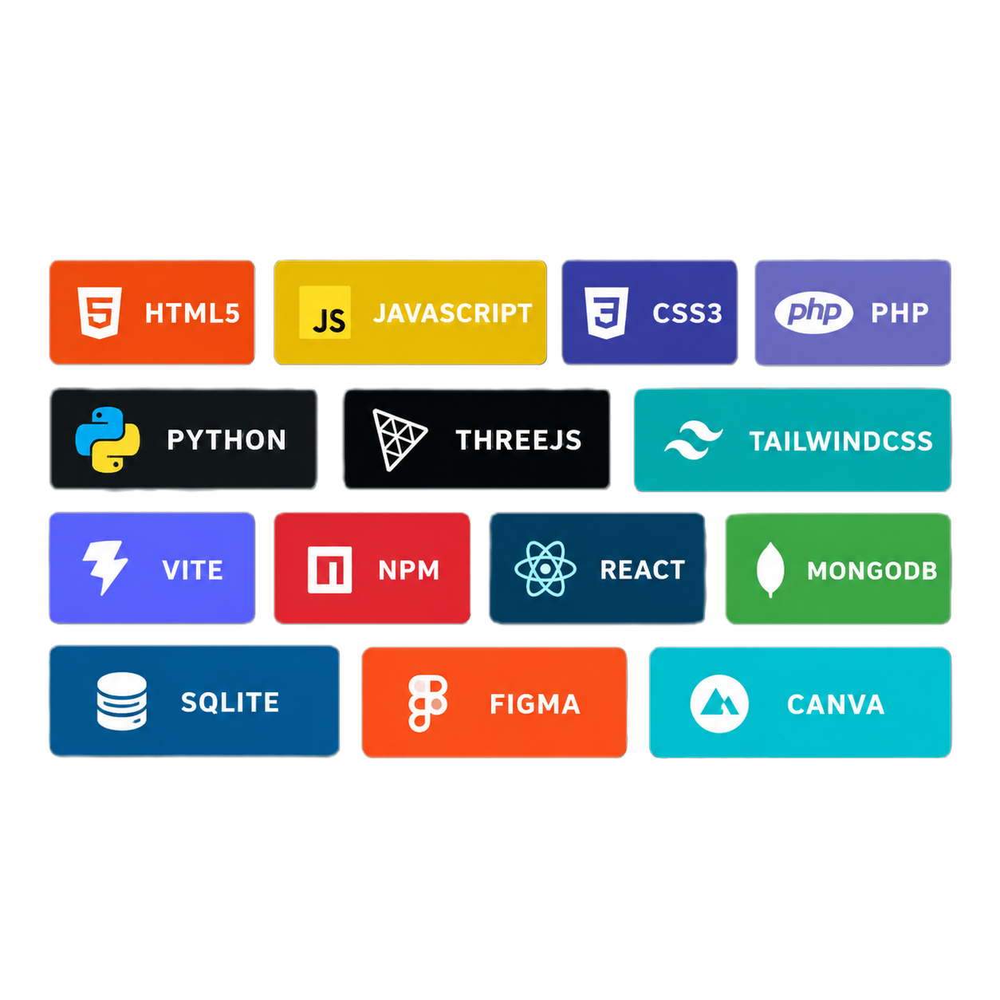

TYGO VAN STEENPAAL / SOFTWARE DEVELOPER
BUILT FOR
THE WEB.
Ik ben Tygo van Steenpaal, een 18-jarige software developer in opleiding aan het Grafisch Lyceum Rotterdam.
DISCOVER MORE +

OVER MIJ
MIJN
VERHAAL
Mijn naam is Tygo van Steenpaal. Ik ben 18 jaar en geboren op 27 november 2007. Op dit moment zit ik in mijn derde jaar Software Development aan het Grafisch Lyceum Rotterdam.
Ik vind het leuk om ideeën om te zetten in bruikbare applicaties. Ik experimenteer graag met nieuwe technologieën en leer mezelf nieuwe tools en vaardigheden aan. In mijn vrije tijd game ik veel, een interesse die mijn nieuwsgierigheid naar computers en software heeft versterkt.
BEKIJK MIJN GITHUB →
MIJN MINDSET
ALTIJD
IN BEWEGING
Ik ben gemotiveerd, creatief en leergierig. Ik communiceer goed, werk graag samen en kan ook zelfstandig verantwoordelijkheid nemen. Wanneer iets niet lukt, zoek ik uit hoe het wel werkt. Fouten zie ik als een kans om beter te worden.
Naast software development volg ik Formule 1 met veel interesse. De combinatie van technologie, strategie en prestaties past goed bij hoe ik zelf naar projecten kijk.
